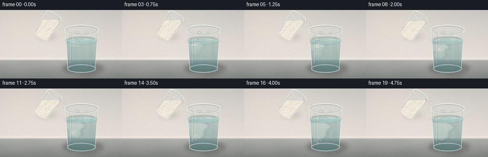
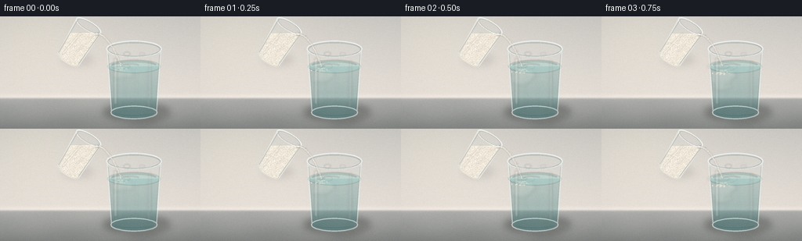
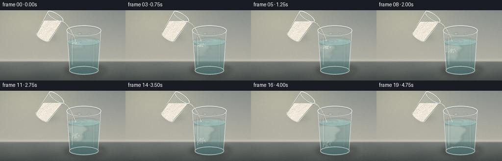
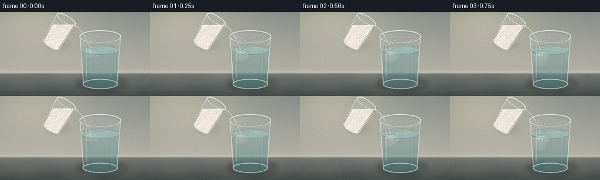
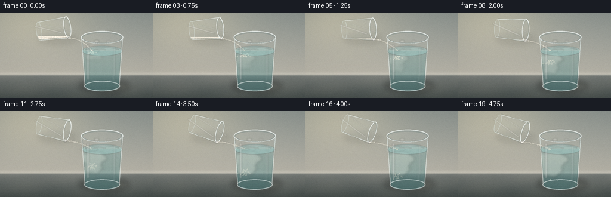
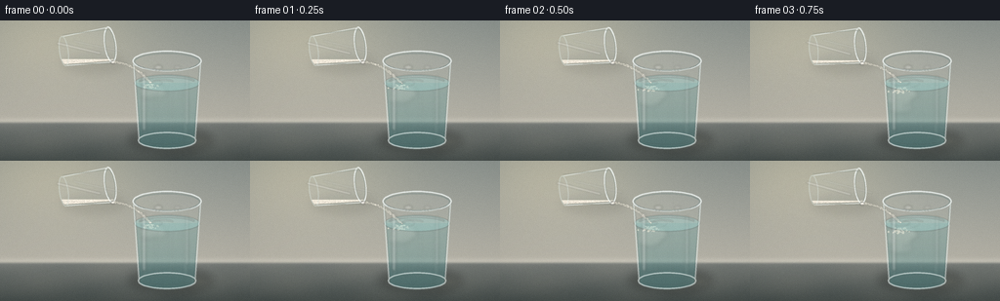

CODING AGENTS AS PIXEL WORLD MODELS
traex/DeepSeek-V4.1-Flash · material_0017
点击播放 · 原生 RGB 像素
逐轮保存的候选
回放视频、检查图与代码变化。
每份候选均可单独播放。实际图片检查记录在下方工具轨迹中。
候选 01播放与检查图
点击播放 · 原生 RGB 像素


展开代码变化
--- 上一保存版本
+++ 本次保存版本
@@ -0,0 +1,624 @@
+from pathlib import Path
+import math
+
+import numpy as np
+from PIL import Image, ImageChops, ImageDraw, ImageFilter
+
+import artifact_io
+
+
+CASE_DIR = Path(__file__).resolve().parent
+WIDTH, HEIGHT = 256, 144
+FRAME_COUNT = 20
+FPS = 4.0
+SS = 4
+W, H = WIDTH * SS, HEIGHT * SS
+
+
+def sc(value):
+ return int(round(value * SS))
+
+
+def rgba(color):
+ if len(color) == 3:
+ return (*color, 255)
+ return color
+
+
+def smoothstep(edge0, edge1, value):
+ x = np.clip((value - edge0) / (edge1 - edge0), 0.0, 1.0)
+ return x * x * (3.0 - 2.0 * x)
+
+
+def gradient_image(top, bottom, width=W, height=H):
+ y = np.linspace(0.0, 1.0, height, dtype=np.float32)[:, None, None]
+ top = np.asarray(top, dtype=np.float32)[None, None, :]
+ bottom = np.asarray(bottom, dtype=np.float32)[None, None, :]
+ data = top * (1.0 - y) + bottom * y
+ return Image.fromarray(np.clip(np.repeat(data, width, axis=1), 0, 255).astype(np.uint8))
+
+
+def make_background():
+ yy, xx = np.mgrid[0:H, 0:W].astype(np.float32)
+ yn = yy / max(H - 1, 1)
+ xn = xx / max(W - 1, 1)
+
+ upper_top = np.array([205.0, 205.0, 199.0], dtype=np.float32)
+ upper_bottom = np.array([239.0, 233.0, 223.0], dtype=np.float32)
+ image = upper_top * (1.0 - yn[..., None]) + upper_bottom * yn[..., None]
+
+ glow = np.exp(-(((xn - 0.17) / 0.38) ** 2 + ((yn - 0.04) / 0.48) ** 2))
+ image += glow[..., None] * np.array([13.0, 11.0, 7.0], dtype=np.float32)
+
+ table_y = 103.0 / HEIGHT
+ edge = np.clip((yn - table_y) / 0.025, 0.0, 1.0)
+ edge = edge * edge * (3.0 - 2.0 * edge)
+ table_top = np.array([178.0, 181.0, 177.0], dtype=np.float32)
+ table_bottom = np.array([133.0, 137.0, 134.0], dtype=np.float32)
+ table_t = np.clip((yn - table_y) / (1.0 - table_y), 0.0, 1.0)
+ table = table_top * (1.0 - table_t[..., None]) + table_bottom * table_t[..., None]
+
+ subtle_vein = 3.0 * np.sin(xn * 14.0 + yn * 10.0) * np.sin(xn * 5.0 - yn * 17.0)
+ table += subtle_vein[..., None] * np.array([1.0, 0.9, 0.75], dtype=np.float32)
+ image = image * (1.0 - edge[..., None]) + table * edge[..., None]
+
+ horizon_glow = np.exp(-((yn - table_y) / 0.022) ** 2) * 9.0
+ image += horizon_glow[..., None]
+
+ vignette = np.clip((xn - 0.5) ** 2 * 0.20 + (yn - 0.47) ** 2 * 0.34, 0.0, 1.0)
+ image *= (1.0 - 0.16 * vignette[..., None])
+ return Image.fromarray(np.clip(image, 0, 255).astype(np.uint8), "RGB")
+
+
+def ellipse_points(cx, cy, rx, ry, angle, count=120):
+ a = math.radians(angle)
+ px, py = math.cos(a), math.sin(a)
+ nx, ny = math.sin(a), -math.cos(a)
+ points = []
+ for i in range(count):
+ theta = 2.0 * math.pi * i / count
+ points.append(
+ (
+ sc(cx + rx * math.cos(theta) * px + ry * math.sin(theta) * nx),
+ sc(cy + rx * math.cos(theta) * py + ry * math.sin(theta) * ny),
+ )
+ )
+ return points
+
+
+def convex_hull(points):
+ points = sorted(set(points))
+ if len(points) <= 1:
+ return points
+
+ def cross(o, a, b):
+ return (a[0] - o[0]) * (b[1] - o[1]) - (a[1] - o[1]) * (b[0] - o[0])
+
+ lower = []
+ for point in points:
+ while len(lower) >= 2 and cross(lower[-2], lower[-1], point) <= 0:
+ lower.pop()
+ lower.append(point)
+ upper = []
+ for point in reversed(points):
+ while len(upper) >= 2 and cross(upper[-2], upper[-1], point) <= 0:
+ upper.pop()
+ upper.append(point)
+ return lower[:-1] + upper[:-1]
+
+
+def cylinder_geometry(cx, cy, length, radius_top, radius_bottom, angle):
+ a = math.radians(angle)
+ axis = np.array([math.sin(a), -math.cos(a)], dtype=np.float64)
+ top = np.array([cx, cy], dtype=np.float64) + axis * length * 0.5
+ bottom = np.array([cx, cy], dtype=np.float64) - axis * length * 0.5
+ return tuple(top), tuple(bottom), angle
+
+
+def cylinder_mask(top, bottom, radius_top, radius_bottom, angle, inset=0.0, rim_ratio=0.30):
+ top_points = ellipse_points(
+ top[0], top[1], radius_top - inset, radius_top * rim_ratio - inset * 0.45, angle
+ )
+ bottom_points = ellipse_points(
+ bottom[0], bottom[1], radius_bottom - inset, radius_bottom * rim_ratio - inset * 0.45, angle
+ )
+ hull = convex_hull(top_points + bottom_points)
+ mask = Image.new("L", (W, H), 0)
+ ImageDraw.Draw(mask).polygon(hull, fill=255)
+ return mask
+
+
+def mask_below(mask, y):
+ region = Image.new("L", (W, H), 0)
+ ImageDraw.Draw(region).rectangle((0, sc(y), W, H), fill=255)
+ return ImageChops.multiply(mask, region)
+
+
+def mask_edge(mask, width=1.0):
+ size = max(3, int(round(width * SS * 2 + 1)))
+ if size % 2 == 0:
+ size += 1
+ eroded = mask.filter(ImageFilter.MinFilter(size))
+ return ImageChops.subtract(mask, eroded)
+
+
+def add_soft_shadows(base):
+ shadow = Image.new("RGBA", (W, H), (0, 0, 0, 0))
+ draw = ImageDraw.Draw(shadow)
+ draw.ellipse(
+ (sc(132), sc(112), sc(216), sc(133)),
+ fill=(52, 55, 50, 95),
+ )
+ draw.ellipse(
+ (sc(155), sc(118), sc(207), sc(137)),
+ fill=(36, 39, 35, 65),
+ )
+ draw.ellipse(
+ (sc(79), sc(48), sc(119), sc(63)),
+ fill=(55, 57, 53, 28),
+ )
+ shadow = shadow.filter(ImageFilter.GaussianBlur(4.5 * SS))
+ return Image.alpha_composite(base.convert("RGBA"), shadow)
+
+
+def draw_water_glass(base, frame, water_geometry):
+ cx, top_y, bottom_y, surface_y, rx_top, rx_bottom = water_geometry
+ top = (cx, top_y)
+ bottom = (cx, bottom_y)
+ outer = cylinder_mask(top, bottom, rx_top, rx_bottom, 0.0, inset=0.0, rim_ratio=0.285)
+ inner = cylinder_mask(top, bottom, rx_top, rx_bottom, 0.0, inset=2.2, rim_ratio=0.285)
+
+ layer = Image.new("RGBA", (W, H), (0, 0, 0, 0))
+ glass_grad = gradient_image((220, 235, 233), (191, 211, 209)).convert("RGBA")
+ alpha = np.zeros((H, W), dtype=np.uint8)
+ alpha[:] = 24
+ glass_grad.putalpha(Image.fromarray(alpha))
+ glass_body = Image.composite(glass_grad, layer, outer)
+ base = Image.alpha_composite(base, glass_body)
+
+ # A faint back-wall arc gives the transparent tumbler depth before the water is laid in.
+ back = Image.new("RGBA", (W, H), (0, 0, 0, 0))
+ bd = ImageDraw.Draw(back)
+ bd.line(
+ ellipse_points(cx, top_y + 0.8, rx_top - 1.2, 8.4, 0.0, 100) + [ellipse_points(cx, top_y + 0.8, rx_top - 1.2, 8.4, 0.0, 100)[0]],
+ fill=(73, 101, 102, 48),
+ width=sc(1.2),
+ )
+ base = Image.alpha_composite(base, back)
+
+ water_mask = mask_below(inner, surface_y - 0.3)
+ water_grad = gradient_image((139, 186, 181), (64, 118, 118)).convert("RGBA")
+ alpha_values = np.zeros((H, W), dtype=np.uint8)
+ for y in range(sc(surface_y), H):
+ local = (y / SS - surface_y) / max(bottom_y - surface_y, 1.0)
+ alpha_values[y, :] = int(83 + 48 * np.clip(local, 0.0, 1.0))
+ water_grad.putalpha(Image.fromarray(alpha_values))
+ water = Image.composite(water_grad, Image.new("RGBA", (W, H), (0, 0, 0, 0)), water_mask)
+ base = Image.alpha_composite(base, water)
+
+ # Soft refracted vertical bands keep the water from reading as a flat blue shape.
+ bands = Image.new("RGBA", (W, H), (0, 0, 0, 0))
+ band_draw = ImageDraw.Draw(bands)
+ for offset, width, alpha_value in [(-23, 3.0, 18), (-12, 2.0, 13), (4, 2.5, 11), (19, 4.0, 20)]:
+ x = cx + offset + 0.7 * math.sin(frame * 0.7 + offset)
+ band_draw.rounded_rectangle(
+ (sc(x - width / 2), sc(surface_y + 2), sc(x + width / 2), sc(bottom_y - 5)),
+ radius=sc(width / 2),
+ fill=(216, 237, 232, alpha_value),
+ )
+ bands = bands.filter(ImageFilter.GaussianBlur(1.4 * SS))
+ bands.putalpha(ImageChops.multiply(bands.getchannel("A"), water_mask))
+ base = Image.alpha_composite(base, bands)
+
+ cloud, grains = salt_cloud_layers(frame, surface_y)
+ cloud.putalpha(ImageChops.multiply(cloud.getchannel("A"), water_mask))
+ grains.putalpha(ImageChops.multiply(grains.getchannel("A"), water_mask))
+ base = Image.alpha_composite(base, cloud)
+ base = Image.alpha_composite(base, grains)
+
+ surface = Image.new("RGBA", (W, H), (0, 0, 0, 0))
+ sd = ImageDraw.Draw(surface)
+ sd.ellipse(
+ (sc(cx - rx_top + 1.5), sc(surface_y - 8.3), sc(cx + rx_top - 1.5), sc(surface_y + 8.3)),
+ fill=(159, 207, 202, 116),
+ )
+ surface = surface.filter(ImageFilter.GaussianBlur(0.45 * SS))
+ base = Image.alpha_composite(base, surface)
+
+ surface_highlights = Image.new("RGBA", (W, H), (0, 0, 0, 0))
+ sh = ImageDraw.Draw(surface_highlights)
+ sh.arc(
+ (sc(cx - rx_top + 5), sc(surface_y - 7.1), sc(cx + rx_top - 5), sc(surface_y + 7.1)),
+ 198,
+ 338,
+ fill=(244, 253, 247, 168),
+ width=sc(1.2),
+ )
+ sh.arc(
+ (sc(cx - 16), sc(surface_y - 3.6), sc(cx + 8), sc(surface_y + 3.6)),
+ 205,
+ 327,
+ fill=(255, 255, 249, 105),
+ width=sc(0.9),
+ )
+ surface_highlights = surface_highlights.filter(ImageFilter.GaussianBlur(0.55 * SS))
+ base = Image.alpha_composite(base, surface_highlights)
+ base = draw_ripples(base, frame, cx, surface_y)
+
+ # Front glass rim, sides and base are kept bright enough to separate the object from the background.
+ details = Image.new("RGBA", (W, H), (0, 0, 0, 0))
+ dd = ImageDraw.Draw(details)
+ rim = ellipse_points(cx, top_y, rx_top, rx_top * 0.285, 0.0, 140)
+ dd.line(rim + [rim[0]], fill=(241, 250, 247, 190), width=sc(1.55))
+ inner_rim = ellipse_points(cx, top_y + 0.7, rx_top - 2.3, (rx_top - 2.3) * 0.285, 0.0, 120)
+ dd.line(inner_rim + [inner_rim[0]], fill=(111, 139, 139, 65), width=sc(0.8))
+
+ for side in (-1, 1):
+ x_top = cx + side * (rx_top - 0.8)
+ x_bottom = cx + side * (rx_bottom - 1.2)
+ dd.line(
+ (sc(x_top), sc(top_y + 3), sc(x_bottom), sc(bottom_y - 2)),
+ fill=(229, 244, 240, 132),
+ width=sc(1.15),
+ )
+ dd.line(
+ (sc(x_top - side * 1.4), sc(top_y + 7), sc(x_bottom - side * 1.0), sc(bottom_y - 7)),
+ fill=(83, 113, 112, 55),
+ width=sc(0.8),
+ )
+
+ base_rim = ellipse_points(cx, bottom_y - 1.0, rx_bottom - 0.5, (rx_bottom - 0.5) * 0.27, 0.0, 130)
+ dd.line(base_rim + [base_rim[0]], fill=(228, 241, 238, 155), width=sc(1.4))
+ dd.arc(
+ (sc(cx - rx_bottom + 4), sc(bottom_y - 5.6), sc(cx + rx_bottom - 4), sc(bottom_y + 3.5)),
+ 16,
+ 164,
+ fill=(76, 100, 99, 76),
+ width=sc(1.2),
+ )
+ base = Image.alpha_composite(base, details)
+
+ highlights = Image.new("RGBA", (W, H), (0, 0, 0, 0))
+ hd = ImageDraw.Draw(highlights)
+ hd.rounded_rectangle(
+ (sc(cx - 25.5), sc(top_y + 12), sc(cx - 22.0), sc(bottom_y - 11)),
+ radius=sc(2),
+ fill=(255, 255, 251, 61),
+ )
+ hd.rounded_rectangle(
+ (sc(cx + 19.2), sc(top_y + 15), sc(cx + 21.8), sc(bottom_y - 17)),
+ radius=sc(2),
+ fill=(245, 253, 249, 39),
+ )
+ hd.ellipse((sc(cx - 13), sc(top_y + 4.5), sc(cx - 5), sc(top_y + 8.5)), fill=(255, 255, 249, 75))
+ hd.ellipse((sc(cx + 7), sc(top_y + 5), sc(cx + 14), sc(top_y + 8)), fill=(255, 255, 249, 45))
+ highlights = highlights.filter(ImageFilter.GaussianBlur(1.1 * SS))
+ base = Image.alpha_composite(base, highlights)
+
+ caustic = Image.new("RGBA", (W, H), (0, 0, 0, 0))
+ cd = ImageDraw.Draw(caustic)
+ cd.ellipse((sc(cx + 17), sc(bottom_y - 5), sc(cx + 47), sc(bottom_y + 5)), fill=(239, 244, 223, 33))
+ caustic = caustic.filter(ImageFilter.GaussianBlur(5.0 * SS))
+ base = Image.alpha_composite(base, caustic)
+ return base
+
+
+def salt_cloud_layers(frame, surface_y):
+ rng = np.random.default_rng(1047)
+ t = frame / FPS + 0.65
+ cloud = Image.new("RGBA", (W, H), (0, 0, 0, 0))
+ draw = ImageDraw.Draw(cloud)
+ impact_x = 154.0
+ specs = []
+ for _ in range(92):
+ specs.append(
+ (
+ rng.uniform(-9.0, 8.5),
+ rng.uniform(3.0, 31.0),
+ rng.uniform(0.18, 0.52),
+ rng.uniform(0.9, 3.6),
+ rng.uniform(-0.7, 0.8),
+ rng.uniform(0.0, 1.2),
+ )
+ )
+ for dx, depth, speed, radius, drift, phase in specs:
+ age = max(0.0, t - depth / 19.0)
+ if age <= 0.0:
+ continue
+ y = surface_y + depth + speed * t * 4.1
+ x = impact_x + dx + drift * t * 3.0 + math.sin(t * 1.8 + phase) * 1.2
+ growth = 1.0 + 0.26 * age
+ r = radius * growth
+ alpha = int(np.clip(25 + 15 * age, 18, 58))
+ draw.ellipse(
+ (sc(x - r * 1.8), sc(y - r), sc(x + r * 1.8), sc(y + r)),
+ fill=(240, 244, 230, alpha),
+ )
+ cloud = cloud.filter(ImageFilter.GaussianBlur(2.2 * SS))
+
+ grains = Image.new("RGBA", (W, H), (0, 0, 0, 0))
+ gd = ImageDraw.Draw(grains)
+ grain_rng = np.random.default_rng(2903)
+ for _ in range(54):
+ dx = grain_rng.normal(0.0, 4.3)
+ delay = grain_rng.uniform(0.0, 0.9)
+ age = max(0.0, t - delay)
+ if age <= 0.0:
+ continue
+ y = surface_y + 1.5 + 5.0 * age + 1.3 * age * age
+ x = impact_x + dx + 0.55 * math.sin(age * 5.0 + dx)
+ if y > 116:
+ continue
+ radius = grain_rng.uniform(0.34, 0.85)
+ alpha = int(np.clip(175 - 38 * age, 75, 180))
+ gd.ellipse(
+ (sc(x - radius), sc(y - radius), sc(x + radius), sc(y + radius)),
+ fill=(248, 246, 226, alpha),
+ )
+ return cloud, grains
+
+
+def draw_ripples(base, frame, cx, surface_y):
+ t = frame / FPS + 0.65
+ layer = Image.new("RGBA", (W, H), (0, 0, 0, 0))
+ draw = ImageDraw.Draw(layer)
+ impact_x = 154.0
+ for birth in (-0.15, 0.82, 1.76, 2.72, 3.72):
+ age = t - birth
+ if age < 0.0 or age > 2.6:
+ continue
+ radius_x = 4.0 + 10.0 * age
+ radius_y = 1.1 + 3.3 * age
+ alpha = int(np.clip(74 * (1.0 - age / 2.8), 8, 70))
+ draw.ellipse(
+ (
+ sc(impact_x - radius_x),
+ sc(surface_y - radius_y),
+ sc(impact_x + radius_x),
+ sc(surface_y + radius_y),
+ ),
+ outline=(233, 251, 244, alpha),
+ width=sc(0.8),
+ )
+ layer = layer.filter(ImageFilter.GaussianBlur(0.45 * SS))
+ return Image.alpha_composite(base, layer)
+
+
+def make_salt_texture():
+ rng = np.random.default_rng(771)
+ base = np.zeros((H, W, 3), dtype=np.float32)
+ base[:] = np.array([238.0, 233.0, 218.0], dtype=np.float32)
+ fine = rng.normal(0.0, 6.5, (H, W, 1)).astype(np.float32)
+ low = rng.normal(0.0, 3.2, (H // 3 + 1, W // 3 + 1, 1)).astype(np.float32)
+ low = np.asarray(
+ Image.fromarray(np.clip(128 + low[..., 0] * 4, 0, 255).astype(np.uint8)).resize(
+ (W, H), Image.Resampling.BICUBIC
+ ),
+ dtype=np.float32,
+ )[..., None]
+ low = (low - 128.0) * 0.72
+ base += fine + low
+ for _ in range(4200):
+ x = int(rng.integers(0, W))
+ y = int(rng.integers(0, H))
+ shade = rng.uniform(-30.0, 22.0)
+ base[y, x] += shade
+ if rng.random() < 0.18:
+ radius = int(rng.integers(1, 3))
+ x0, x1 = max(0, x - radius), min(W, x + radius + 1)
+ y0, y1 = max(0, y - radius), min(H, y + radius + 1)
+ base[y0:y1, x0:x1] += shade * 0.35
+ return Image.fromarray(np.clip(base, 0, 255).astype(np.uint8), "RGB")
+
+
+SALT_TEXTURE = make_salt_texture()
+
+
+def draw_salt_cellar(base, frame):
+ angle = 30.5 + 6.1 * float(smoothstep(0.0, 12.0, frame)) + 0.65 * math.sin(frame * 0.55)
+ cx, cy = 100.0, 34.0
+ top, bottom, angle = cylinder_geometry(cx, cy, 51.0, 18.0, 15.2, angle)
+ outer = cylinder_mask(top, bottom, 18.0, 15.2, angle, inset=0.0, rim_ratio=0.31)
+ inner = cylinder_mask(top, bottom, 18.0, 15.2, angle, inset=1.6, rim_ratio=0.31)
+
+ body = Image.new("RGBA", (W, H), (0, 0, 0, 0))
+ body_grad = gradient_image((222, 235, 231), (192, 209, 205)).convert("RGBA")
+ body_alpha = np.zeros((H, W), dtype=np.uint8)
+ body_alpha[:] = 28
+ body_grad.putalpha(Image.fromarray(body_alpha))
+ body = Image.composite(body_grad, body, outer)
+ base = Image.alpha_composite(base, body)
+
+ rim_points = ellipse_points(top[0], top[1], 18.0, 18.0 * 0.31, angle, 140)
+ lower_lip_y = max(point[1] for point in rim_points) / SS
+ salt_level = lower_lip_y - 0.9 + 0.08 * frame
+ salt_mask = mask_below(inner, salt_level)
+ texture = SALT_TEXTURE.rotate(
+ 0,
+ translate=(int(math.sin(frame * 0.55) * 2.0 * SS), int(frame * 0.25 * SS)),
+ )
+ salt_layer = Image.composite(texture.convert("RGBA"), Image.new("RGBA", (W, H), (0, 0, 0, 0)), salt_mask)
+ base = Image.alpha_composite(base, salt_layer)
+
+ shade = Image.new("RGBA", (W, H), (0, 0, 0, 0))
+ shade_arr = np.zeros((H, W, 4), dtype=np.uint8)
+ yy = np.arange(H, dtype=np.float32)[:, None]
+ shade_arr[..., 3] = np.clip((yy / H - 0.38) * 68, 0, 42).astype(np.uint8)
+ shade = Image.fromarray(shade_arr, "RGBA")
+ shade.putalpha(ImageChops.multiply(shade.getchannel("A"), salt_mask))
+ base = Image.alpha_composite(base, shade)
+
+ salt_surface = Image.new("RGBA", (W, H), (0, 0, 0, 0))
+ sd = ImageDraw.Draw(salt_surface)
+ sd.line((0, sc(salt_level), W, sc(salt_level)), fill=(255, 252, 234, 125), width=sc(0.9))
+ salt_surface.putalpha(ImageChops.multiply(salt_surface.getchannel("A"), salt_mask))
+ base = Image.alpha_composite(base, salt_surface)
+
+ # Fine crystal glints make the salt readable at the small target resolution.
+ glints = Image.new("RGBA", (W, H), (0, 0, 0, 0))
+ gd = ImageDraw.Draw(glints)
+ rng = np.random.default_rng(611 + frame * 19)
+ for _ in range(48):
+ x = rng.uniform(86.0, 127.0)
+ y = rng.uniform(max(salt_level, 25.0), 56.0)
+ radius = rng.uniform(0.28, 0.65)
+ gd.ellipse(
+ (sc(x - radius), sc(y - radius), sc(x + radius), sc(y + radius)),
+ fill=(255, 253, 238, int(rng.uniform(45, 105))),
+ )
+ glints.putalpha(ImageChops.multiply(glints.getchannel("A"), salt_mask))
+ base = Image.alpha_composite(base, glints)
+
+ detail = Image.new("RGBA", (W, H), (0, 0, 0, 0))
+ dd = ImageDraw.Draw(detail)
+ rim = ellipse_points(top[0], top[1], 18.0, 18.0 * 0.31, angle, 140)
+ dd.line(rim + [rim[0]], fill=(244, 251, 247, 210), width=sc(1.55))
+ inner_rim = ellipse_points(top[0], top[1] + 0.25, 15.9, 15.9 * 0.31, angle, 120)
+ dd.line(inner_rim + [inner_rim[0]], fill=(108, 133, 130, 62), width=sc(0.8))
+
+ a = math.radians(angle)
+ p = np.array([math.cos(a), math.sin(a)], dtype=np.float64)
+ for side in (-1, 1):
+ p_top = np.array(top) + side * 17.9 * p
+ p_bottom = np.array(bottom) + side * 15.1 * p
+ dd.line(
+ (sc(p_top[0]), sc(p_top[1]), sc(p_bottom[0]), sc(p_bottom[1])),
+ fill=(239, 249, 245, 144),
+ width=sc(1.2),
+ )
+ dd.line(
+ (
+ sc(p_top[0] - side * 1.25),
+ sc(p_top[1] + 2.0),
+ sc(p_bottom[0] - side * 0.8),
+ sc(p_bottom[1] - 2.0),
+ ),
+ fill=(70, 97, 96, 50),
+ width=sc(0.7),
+ )
+ bottom_rim = ellipse_points(bottom[0], bottom[1], 15.2, 15.2 * 0.30, angle, 110)
+ dd.line(bottom_rim + [bottom_rim[0]], fill=(222, 237, 232, 96), width=sc(1.0))
+ base = Image.alpha_composite(base, detail)
+
+ highlights = Image.new("RGBA", (W, H), (0, 0, 0, 0))
+ hd = ImageDraw.Draw(highlights)
+ hd.line(
+ (sc(top[0] - 10), sc(top[1] + 9), sc(bottom[0] - 7), sc(bottom[1] - 8)),
+ fill=(255, 255, 250, 57),
+ width=sc(2.4),
+ )
+ hd.line(
+ (sc(top[0] + 12), sc(top[1] + 7), sc(bottom[0] + 10), sc(bottom[1] - 10)),
+ fill=(248, 255, 251, 32),
+ width=sc(1.7),
+ )
+ lip_x = max(rim, key=lambda point: point[1])[0] / SS
+ hd.ellipse((sc(lip_x - 2.0), sc(lower_lip_y - 1.2), sc(lip_x + 2.4), sc(lower_lip_y + 1.8)), fill=(255, 255, 250, 170))
+ highlights = highlights.filter(ImageFilter.GaussianBlur(0.55 * SS))
+ base = Image.alpha_composite(base, highlights)
+ return base, np.array([lip_x, lower_lip_y], dtype=np.float64), angle
+
+
+def draw_stream(base, frame, lip, angle):
+ t = frame / FPS + 0.65
+ target_x = 154.5
+ surface_y = 64.0
+ fall = max(surface_y - lip[1], 12.0)
+ g = 285.0
+ lifetime = math.sqrt(2.0 * fall / g)
+ vx = (target_x - lip[0]) / lifetime
+
+ stream = Image.new("RGBA", (W, H), (0, 0, 0, 0))
+ draw = ImageDraw.Draw(stream)
+ rng = np.random.default_rng(812)
+ particles = 230
+ for index in range(particles):
+ phase = (index / particles + rng.uniform(-0.0025, 0.0025)) % 1.0
+ age = ((t / lifetime + phase) % 1.0) * lifetime
+ jitter_x = rng.normal(0.0, 0.55)
+ jitter_y = rng.normal(0.0, 0.35)
+ x = lip[0] + vx * age + jitter_x
+ y = lip[1] + 0.5 * g * age * age + jitter_y
+ if y > surface_y + 2.0:
+ continue
+ previous_age = max(0.0, age - 0.018)
+ px = lip[0] + vx * previous_age + jitter_x * 0.7
+ py = lip[1] + 0.5 * g * previous_age * previous_age + jitter_y * 0.7
+ radius = rng.uniform(0.28, 0.78)
+ alpha = int(rng.uniform(105, 225))
+ draw.line(
+ (sc(px), sc(py), sc(x), sc(y)),
+ fill=(247, 244, 226, int(alpha * 0.44)),
+ width=max(1, sc(radius * 1.25)),
+ )
+ draw.ellipse(
+ (sc(x - radius), sc(y - radius), sc(x + radius), sc(y + radius)),
+ fill=(250, 248, 232, alpha),
+ )
+
+ # A very soft salt ribbon ties the granular dots into one falling stream.
+ ribbon = Image.new("RGBA", (W, H), (0, 0, 0, 0))
+ rd = ImageDraw.Draw(ribbon)
+ samples = []
+ for index in range(35):
+ age = lifetime * index / 34.0
+ x = lip[0] + vx * age
+ y = lip[1] + 0.5 * g * age * age
+ samples.append((sc(x), sc(y)))
+ if len(samples) > 1:
+ rd.line(samples, fill=(245, 241, 219, 24), width=sc(1.25))
+ ribbon = ribbon.filter(ImageFilter.GaussianBlur(1.25 * SS))
+ base = Image.alpha_composite(base, ribbon)
+ stream = stream.filter(ImageFilter.GaussianBlur(0.18 * SS))
+ return Image.alpha_composite(base, stream)
+
+
+def add_foreground_grade(image, frame):
+ arr = np.asarray(image.convert("RGB"), dtype=np.float32)
+ image_height, image_width = arr.shape[:2]
+ yy, xx = np.mgrid[0:image_height, 0:image_width].astype(np.float32)
+ yn = yy / (image_height - 1)
+ xn = xx / (image_width - 1)
+ vignette = np.clip((xn - 0.5) ** 2 * 0.26 + (yn - 0.48) ** 2 * 0.38, 0.0, 1.0)
+ arr *= (1.0 - 0.12 * vignette[..., None])
+ arr[..., 0] *= 1.012
+ arr[..., 2] *= 1.004
+ rng = np.random.default_rng(2000 + frame)
+ grain = rng.normal(0.0, 1.15, (image_height, image_width, 1)).astype(np.float32)
+ arr += grain
+ return Image.fromarray(np.clip(arr, 0, 255).astype(np.uint8), "RGB")
+
+
+def render_frame(frame, background, water_geometry):
+ base = add_soft_shadows(background)
+ base = draw_water_glass(base, frame, water_geometry)
+ base, lip, angle = draw_salt_cellar(base, frame)
+ base = draw_stream(base, frame, lip, angle)
+ image = base.convert("RGB").resize((WIDTH, HEIGHT), Image.Resampling.LANCZOS)
+ return add_foreground_grade(image, frame)
+
+
+def main():
+ background = make_background()
+ background = background.filter(ImageFilter.GaussianBlur(0.42 * SS))
+ water_geometry = (171.0, 41.5, 124.0, 64.0, 35.0, 30.0)
+ frames = []
+ for frame in range(FRAME_COUNT):
+ image = render_frame(frame, background, water_geometry)
+ frames.append(np.asarray(image, dtype=np.uint8))
+ print(f"rendered {frame + 1:02d}/{FRAME_COUNT}", flush=True)
+ artifact_io.save(frames, CASE_DIR)
+
+ gif_frames = [Image.fromarray(frame) for frame in frames]
+ gif_frames[0].save(
+ CASE_DIR / "preview.gif",
+ save_all=True,
+ append_images=gif_frames[1:],
+ duration=round(1000 / FPS),
+ loop=0,
+ optimize=False,
+ )
+
+
+if __name__ == "__main__":
+ main()
候选 02播放与检查图
点击播放 · 原生 RGB 像素


展开代码变化
--- 上一保存版本
+++ 本次保存版本
@@ -43,30 +43,30 @@
yn = yy / max(H - 1, 1)
xn = xx / max(W - 1, 1)
- upper_top = np.array([205.0, 205.0, 199.0], dtype=np.float32)
- upper_bottom = np.array([239.0, 233.0, 223.0], dtype=np.float32)
+ upper_top = np.array([139.0, 148.0, 143.0], dtype=np.float32)
+ upper_bottom = np.array([196.0, 191.0, 176.0], dtype=np.float32)
image = upper_top * (1.0 - yn[..., None]) + upper_bottom * yn[..., None]
- glow = np.exp(-(((xn - 0.17) / 0.38) ** 2 + ((yn - 0.04) / 0.48) ** 2))
- image += glow[..., None] * np.array([13.0, 11.0, 7.0], dtype=np.float32)
+ glow = np.exp(-(((xn - 0.20) / 0.40) ** 2 + ((yn - 0.02) / 0.42) ** 2))
+ image += glow[..., None] * np.array([39.0, 31.0, 18.0], dtype=np.float32)
table_y = 103.0 / HEIGHT
edge = np.clip((yn - table_y) / 0.025, 0.0, 1.0)
edge = edge * edge * (3.0 - 2.0 * edge)
- table_top = np.array([178.0, 181.0, 177.0], dtype=np.float32)
- table_bottom = np.array([133.0, 137.0, 134.0], dtype=np.float32)
+ table_top = np.array([122.0, 127.0, 122.0], dtype=np.float32)
+ table_bottom = np.array([72.0, 80.0, 77.0], dtype=np.float32)
table_t = np.clip((yn - table_y) / (1.0 - table_y), 0.0, 1.0)
table = table_top * (1.0 - table_t[..., None]) + table_bottom * table_t[..., None]
- subtle_vein = 3.0 * np.sin(xn * 14.0 + yn * 10.0) * np.sin(xn * 5.0 - yn * 17.0)
- table += subtle_vein[..., None] * np.array([1.0, 0.9, 0.75], dtype=np.float32)
+ subtle_vein = 3.5 * np.sin(xn * 14.0 + yn * 10.0) * np.sin(xn * 5.0 - yn * 17.0)
+ table += subtle_vein[..., None] * np.array([1.1, 0.9, 0.72], dtype=np.float32)
image = image * (1.0 - edge[..., None]) + table * edge[..., None]
- horizon_glow = np.exp(-((yn - table_y) / 0.022) ** 2) * 9.0
+ horizon_glow = np.exp(-((yn - table_y) / 0.022) ** 2) * 13.0
image += horizon_glow[..., None]
vignette = np.clip((xn - 0.5) ** 2 * 0.20 + (yn - 0.47) ** 2 * 0.34, 0.0, 1.0)
- image *= (1.0 - 0.16 * vignette[..., None])
+ image *= (1.0 - 0.24 * vignette[..., None])
return Image.fromarray(np.clip(image, 0, 255).astype(np.uint8), "RGB")
候选 03播放与检查图
点击播放 · 原生 RGB 像素


展开代码变化
--- 上一保存版本
+++ 本次保存版本
@@ -154,7 +154,7 @@
fill=(36, 39, 35, 65),
)
draw.ellipse(
- (sc(79), sc(48), sc(119), sc(63)),
+ (sc(63), sc(34), sc(129), sc(54)),
fill=(55, 57, 53, 28),
)
shadow = shadow.filter(ImageFilter.GaussianBlur(4.5 * SS))
@@ -415,9 +415,9 @@
def draw_salt_cellar(base, frame):
- angle = 30.5 + 6.1 * float(smoothstep(0.0, 12.0, frame)) + 0.65 * math.sin(frame * 0.55)
- cx, cy = 100.0, 34.0
- top, bottom, angle = cylinder_geometry(cx, cy, 51.0, 18.0, 15.2, angle)
+ angle = 82.0 + 26.0 * float(smoothstep(0.0, 17.0, frame)) + 0.55 * math.sin(frame * 0.55)
+ cx, cy = 89.0, 28.0
+ top, bottom, angle = cylinder_geometry(cx, cy, 48.0, 18.0, 15.2, angle)
outer = cylinder_mask(top, bottom, 18.0, 15.2, angle, inset=0.0, rim_ratio=0.31)
inner = cylinder_mask(top, bottom, 18.0, 15.2, angle, inset=1.6, rim_ratio=0.31)
@@ -431,7 +431,7 @@
rim_points = ellipse_points(top[0], top[1], 18.0, 18.0 * 0.31, angle, 140)
lower_lip_y = max(point[1] for point in rim_points) / SS
- salt_level = lower_lip_y - 0.9 + 0.08 * frame
+ salt_level = lower_lip_y - 2.8 + 0.05 * frame
salt_mask = mask_below(inner, salt_level)
texture = SALT_TEXTURE.rotate(
0,
可观测工具轨迹
实际执行的命令与返回图片。
命令 1exit 0
/bin/bash -c "pwd && rg --files -g '"'!*.mp4'"' -g '"'!*.mov'"' -g '"'!*.avi'"' | sed -n '1,160p'"
命令 2exit 0
/bin/bash -c "sed -n '1,240p' prompt.txt"
命令 3exit 0
/bin/bash -c "sed -n '1,280p' GENERATION_RULES.md"
命令 4exit 0
/bin/bash -c "sed -n '1,280p' task_spec.json"
命令 5exit 0
/bin/bash -c "find . -maxdepth 2 -type f -printf '%p %s bytes\\n' | sort | sed -n '1,200p'"
命令 6exit 0
/bin/bash -c "sed -n '1,260p' artifact_io.py"
命令 7exit 0
/bin/bash -c "python - <<'PY'
import numpy, PIL
print('numpy', numpy.__version__)
print('Pillow', PIL.__version__)
PY"命令 8exit 0
/bin/bash -c 'command -v chafa || true; command -v viu || true; command -v ffmpeg || true; command -v magick || true; command -v convert || true'
命令 9exit 1
/bin/bash -c 'python generate.py'
命令 10exit 0
/bin/bash -c 'rg -n "gradient_image" generate.py'
命令 11exit 1
/bin/bash -c 'python generate.py'
命令 12exit 0
/bin/bash -c 'python generate.py'
命令 13exit 0
/bin/bash -c "python - <<'PY'
from PIL import Image
import numpy as np
im=Image.open('inspection.png').convert('RGB')
print('inspection', im.size)
a=np.asarray(im)
print('mean', a.mean((0,1)), 'min', a.min((0,1)), 'max', a.max((0,1)))
for i in range(20):
b=np.asarray(Image.open(f'frames/{i:02d}.png').convert('RGB'))
print(i, 'mean', np.round(b.mean((0,1)),1), 'diff', 0 if i==0 else np.abs(b-prev).mean().round(2), 'unique', len(np.unique(b.reshape(-1,3),axis=0)))
prev=b
PY"命令 14exit 0
/bin/bash -c "python - <<'PY'
from PIL import Image
import numpy as np
for fi in (0,6,13,19):
a=np.asarray(Image.open(f'frames/{fi:02d}.png').convert('RGB')).astype(float)
# 2x2 downsample to 128x72; classify hue/value for structural check
a=a.reshape(72,2,128,2,3).mean((1,3))
r,g,b=a[...,0],a[...,1],a[...,2]
v=a.mean(-1)
chroma=a.max(-1)-a.min(-1)
chars=np.full((72,128),' ',dtype='<U1')
chars[v<70]='#'
chars[(v>=70)&(v<125)]='O'
chars[(v>=125)&(v<165)]='+'
chars[(v>=165)&(v<205)]='.'
chars[v>=205]=' '
# cool/water colors
cool=(b-r>5)&(g-r>4)&(v>80)
chars[cool]='w'
# salt/yellow warm on table / vessel
warm=(r-b>12)&(v>160)
chars[warm]='s'
# near-white glass edges, mark only when cool bright
chars[(v>225)&(cool)]='W'
print('\\nFRAME',fi)
for row in chars: print(''.join(row))
PY"命令 15exit 0
/bin/bash -c "python - <<'PY'
from PIL import Image
im=Image.open('inspection.png')
print(im.mode, im.size)
# report region stats, to make sure composition has warm/cool contrast and no clipping
import numpy as np
a=np.asarray(im)
regions={'salt_vessel':a[42:180,300:560], 'water_glass':a[150:500,600:900], 'table':a[450:620,0:1024]}
for k,b in regions.items():
print(k, 'mean', np.round(b.mean((0,1)),1), 'std', np.round(b.std((0,1)),1), 'clip255', round((b==255).mean()*100,3), 'clip0', round((b==0).mean()*100,3))
PY"命令 16exit 0
/bin/bash -c "python - <<'PY'
from PIL import Image
import numpy as np
for fi in (0,5,10,15,19):
a=np.asarray(Image.open(f'frames/{fi:02d}.png').convert('RGB')).astype(float)
print('\\nFRAME',fi)
# ascii crop for vessel/stream/water: x 64..222, y 20..130, 2x2 downsample
c=a[20:130,64:224].reshape(55,2,80,2,3).mean((1,3))
r,g,b=c[...,0],c[...,1],c[...,2]; v=c.mean(-1)
chars=np.full((55,80),' ')
chars[v<80]='#'
chars[(v>=80)&(v<120)]='O'
chars[(v>=120)&(v<160)]='+'
chars[(v>=160)&(v<195)]='.'
chars[(v>=195)&(v<225)]=':'
chars[v>=225]='@'
warm=(r-b>15)&(v>150); chars[warm]='s'
cool=(b-r>8)&(g-r>4)&(v>90); chars[cool]='w'
print('\\n'.join(''.join(row) for row in chars))
PY"命令 17exit 0
/bin/bash -c "python - <<'PY'
from PIL import Image
import numpy as np
# print key color stats in native frames for top-left vessel, stream, water.
for fi in (0,9,19):
a=np.asarray(Image.open(f'frames/{fi:02d}.png').convert('RGB')).astype(float)
print('frame',fi)
for name,box in {'vessel':(80,20,130,62),'stream':(125,50,160,68),'water':(138,68,205,118),'table':(10,115,240,140)}.items():
x0,y0,x1,y1=box;b=a[y0:y1,x0:x1]
print(name,'mean',np.round(b.mean((0,1)),1),'std',np.round(b.std((0,1)),1),'min',np.round(b.min((0,1)),1),'max',np.round(b.max((0,1)),1))
PY"命令 18exit 0
/bin/bash -c "python - <<'PY'
from PIL import Image
import numpy as np
# Build 4x5 native-res tiled contact sheet for local review.
ims=[Image.open(f'frames/{i:02d}.png').convert('RGB') for i in range(20)]
sheet=Image.new('RGB',(256*4,144*5),(30,30,30))
for i,im in enumerate(ims): sheet.paste(im,((i%4)*256,(i//4)*144))
sheet.save('review_contact.png')
# Quantify stream occupancy in expected corridor (center x 128..159, y 47..66)
for fi in (0,5,10,15,19):
a=np.asarray(ims[fi]).astype(float)
crop=a[47:67,124:161]
salt=((crop.mean(-1)>205)&((crop[...,0]-crop[...,2])>4)).sum()
print(fi,'salt pixels in stream corridor',salt)
PY"命令 19exit 0
/bin/bash -c "python - <<'PY'
from PIL import Image
import numpy as np
ims=[np.asarray(Image.open(f'frames/{i:02d}.png').convert('RGB'),dtype=np.int16) for i in range(20)]
for i in range(1,20):
d=np.abs(ims[i]-ims[i-1])
print(i, 'MAD', round(float(d.mean()),3), 'p95', int(np.percentile(d,95)), 'max', int(d.max()), 'changed>10', round(float((d>10).mean()*100),2))
PY"命令 20exit 0
/bin/bash -c "python - <<'PY'
from PIL import Image
import numpy as np
for fi in (0,10,19):
a=np.asarray(Image.open(f'frames/{fi:02d}.png').convert('RGB')).astype(float)
print('\\nFRAME',fi)
# edge density along stream path / glass silhouette as sanity check
for x0,y0,x1,y1,name in [(95,54,155,68,'stream'),(130,62,215,125,'water'),(78,16,126,64,'salt vessel')]:
b=a[y0:y1,x0:x1]
print(name,'mean',np.round(b.mean((0,1)),1),'std',round(float(b.std()),1))
PY"命令 21exit 0
/bin/bash -c 'python generate.py'
命令 22exit 0
/bin/bash -c "python - <<'PY'
from PIL import Image
import numpy as np
ims=[np.asarray(Image.open(f'frames/{i:02d}.png').convert('RGB'),dtype=np.int16) for i in range(20)]
print('shape',ims[0].shape)
for i in range(1,20):
d=np.abs(ims[i]-ims[i-1])
print(i, 'MAD', round(float(d.mean()),3), 'p99', int(np.percentile(d,99)), 'changed>12', round(float((d>12).mean()*100),2))
for fi in (0,6,13,19):
a=ims[fi].astype(float)
print('\\nFRAME',fi)
for name,box in {'salt_vessel':(80,18,126,63),'stream':(98,55,158,68),'water':(136,66,208,124),'table':(12,116,240,140)}.items():
x0,y0,x1,y1=box;b=a[y0:y1,x0:x1]
print(name, 'mean', np.round(b.mean((0,1)),1), 'std', round(float(b.std()),1))
PY"命令 23exit 0
/bin/bash -c "python - <<'PY'
from PIL import Image
import numpy as np
ims=[Image.open(f'frames/{i:02d}.png').convert('RGB') for i in range(20)]
sheet=Image.new('RGB',(256*4,144*5),(28,28,28))
for i,im in enumerate(ims): sheet.paste(im,((i%4)*256,(i//4)*144))
sheet.save('review_contact.png')
# Check that all frames are RGB, native size, and contain substantial visual detail.
for i,im in enumerate(ims):
assert im.mode=='RGB' and im.size==(256,144)
a=np.asarray(im)
assert a.std()>15 and len(np.unique(a.reshape(-1,3),axis=0))>1000
print('validated',len(ims),'frames; contact sheet',sheet.size)
PY"命令 24exit 0
/bin/bash -c "python - <<'PY'
from PIL import Image
import numpy as np
im=Image.open('frames/19.png').convert('RGB')
a=np.asarray(im)
# Native-res structural map, with foreground salt/glass retained as symbols.
chars=np.full((72,128),' ')
for yy in range(72):
for xx in range(128):
b=a[yy*2:yy*2+2,xx*2:xx*2+2].mean((0,1))
v=b.mean(); r,g,bl=b
if v<55: c='#'
elif v<90: c='O'
elif v<125: c='+'
elif v<165: c='.'
elif v<205: c=':'
else: c='@'
if bl-r>5 and g-r>3 and v>70: c='w'
if r-bl>9 and v>145: c='s'
chars[yy,xx]=c
for row in chars[18:63]: print(''.join(row[52:118]))
PY"命令 25exit 0
/bin/bash -c "python - <<'PY'
from PIL import Image
import numpy as np
for fi in (0,19):
a=np.asarray(Image.open(f'frames/{fi:02d}.png').convert('RGB')).astype(float)
print('frame',fi)
# Check local contrast at the top of the water glass, at the salt stream impact.
for name,(x0,y0,x1,y1) in {'impact':(145,57,166,74),'plume':(143,72,170,101),'rim':(138,58,205,70),'fall':(118,50,152,66)}.items():
b=a[y0:y1,x0:x1]
print(name,'mean',np.round(b.mean((0,1)),1),'std',round(float(b.std()),1),'range',np.round(b.max((0,1))-b.min((0,1)),1))
PY"命令 26exit 0
/bin/bash -c "git status --short && find . -maxdepth 2 -type f -printf '%p %s bytes\\n' | sort"
命令 27exit 0
/bin/bash -c 'python generate.py'
命令 28exit 0
/bin/bash -c "python - <<'PY'
from PIL import Image
import numpy as np
ims=[Image.open(f'frames/{i:02d}.png').convert('RGB') for i in range(20)]
sheet=Image.new('RGB',(256*4,144*5),(28,28,28))
for i,im in enumerate(ims): sheet.paste(im,((i%4)*256,(i//4)*144))
sheet.save('review_contact.png')
a=np.asarray(ims[19]).astype(float)
for name,(x0,y0,x1,y1) in {'vessel':(45,10,130,68),'stream':(98,42,160,66),'water':(136,66,208,124),'table':(12,116,240,140)}.items():
b=a[y0:y1,x0:x1]
print(name,'mean',np.round(b.mean((0,1)),1),'std',round(float(b.std()),1))
print('sheet',sheet.size)
PY"命令 29exit 0
/bin/bash -c "python - <<'PY' import math, generate as g for f in (0,9,19): angle=82+26*float(g.smoothstep(0,17,f))+0.55*math.sin(f*0.55) top,bottom,a=g.cylinder_geometry(89,28,48,18,15.2,angle) rim=g.ellipse_points(top[0],top[1],18,18*.31,angle,140) lip=max(rim,key=lambda p:p[1]) print(f, 'angle',round(angle,2),'top',tuple(round(x,2) for x in top),'bottom',tuple(round(x,2) for x in bottom),'lip',lip[0]/4,lip[1]/4,'salt_level',lip[1]/4-2.8+.05*f) PY"
命令 30exit 0
/bin/bash -c "python - <<'PY'
from PIL import Image
import numpy as np
for fi in (0,10,19):
a=np.asarray(Image.open(f'frames/{fi:02d}.png').convert('RGB')).astype(float)
print('\\nFRAME',fi)
# 1x1 map of vessel/stream/water with 2x horizontal downsampling
crop=a[8:128,36:224]
c=crop.reshape(60,2,94,2,3).mean((1,3))
r,g,b=c[...,0],c[...,1],c[...,2]; v=c.mean(-1)
out=np.full((60,94),' ')
for y in range(60):
for x in range(94):
if v[y,x]<70:ch='#'
elif v[y,x]<100:ch='O'
elif v[y,x]<130:ch='+'
elif v[y,x]<165:ch='.'
elif v[y,x]<195:ch=':'
elif v[y,x]<220:ch='*'
else:ch='@'
if b[y,x]-r[y,x]>7 and g[y,x]-r[y,x]>4 and v[y,x]>75: ch='w'
if r[y,x]-b[y,x]>13 and v[y,x]>160: ch='s'
out[y,x]=ch
print('\\n'.join(''.join(row) for row in out))
PY"命令 31exit 0
/bin/bash -c "python - <<'PY'
from PIL import Image, ImageFilter
import numpy as np
ims=[Image.open(f'frames/{i:02d}.png').convert('RGB').filter(ImageFilter.GaussianBlur(1.0)) for i in range(20)]
a=[np.asarray(im).astype(np.int16) for im in ims]
for i in range(1,20):
d=np.abs(a[i]-a[i-1])
print(i, round(float(d.mean()),3), round(float((d>6).mean()*100),2))
PY"命令 32exit 0
/bin/bash -c "python - <<'PY'
from PIL import Image
import numpy as np
for fi in (0,19):
im=Image.open(f'frames/{fi:02d}.png').convert('RGB')
# native image enlarged with nearest for closer local visual inspection, save as debug artifact only
im.resize((1024,576),Image.Resampling.NEAREST).save(f'debug_{fi:02d}_nearest.png')
a=np.asarray(im)
print(fi,'mean',a.mean((0,1)),'median',np.median(a,axis=(0,1)),'p5/p95',np.percentile(a,[5,95],axis=(0,1)))
PY"命令 33exit 0
/bin/bash -c "python - <<'PY'
from PIL import Image
import numpy as np
# Identify top salient edges by Sobel-like gradient to confirm vessel and glass boundaries exist.
a=np.asarray(Image.open('frames/19.png').convert('RGB')).astype(np.float32).mean(-1)
gx=np.abs(np.diff(a,axis=1)); gy=np.abs(np.diff(a,axis=0))
print('gradient mean',gx.mean(),gy.mean(),'p99',np.percentile(np.r_[gx.ravel(),gy.ravel()],99))
# sample grid of RGB values along a horizontal line through vessel
for y in (20,30,40,55,65,80,110):
print('y',y,[tuple(np.asarray(Image.open('frames/19.png'))[y,x]) for x in (50,70,90,110,130,150,170,190,210)])
PY"命令 34exit 1
/bin/bash -c "python -m py_compile generate.py artifact_io.py && python - <<'PY'
from pathlib import Path
from PIL import Image
import base64, json, re
import numpy as np
root=Path('.')
frames=np.stack([np.asarray(Image.open(root/'frames'/f'{i:02d}.png').convert('RGB')) for i in range(20)])
packed=np.load(root/'pixels.npz')['pixels']
assert packed.shape==(144,256,20)
rebuilt=np.empty((20,144,256,3),dtype=np.uint8)
rebuilt[...,0]=(packed>>16)&255
rebuilt[...,1]=(packed>>8)&255
rebuilt[...,2]=packed&255
assert np.array_equal(frames,rebuilt), 'pixels.npz mismatch'
html=(root/'index.html').read_text()
match=re.search(r'const DATA = (\\{.*?\\});',html,re.S)
assert match, 'embedded payload not found'
data=json.loads(match.group(1))
assert data['width']==256 and data['height']==144 and data['frames']==20 and data['fps']==4.0
assert len(data['deltas'])==19
first=np.frombuffer(base64.b64decode(data['first']),dtype='<u4').reshape(144,256)
assert np.array_equal(first,packed[:,:,0]), 'first frame mismatch'
print('validated: 20 RGB frames, 256x144, 4 fps, npz + embedded player payload consistent')
PY"命令 35exit 1
/bin/bash -c "python - <<'PY'
from pathlib import Path
from PIL import Image
import base64, json, re
import numpy as np
root=Path('.')
frames=np.stack([np.asarray(Image.open(root/'frames'/f'{i:02d}.png').convert('RGB')) for i in range(20)])
packed=np.load(root/'pixels.npz')['pixels'].transpose(2,0,1)
assert packed.shape==(20,144,256)
rebuilt=np.empty((20,144,256,3),dtype=np.uint8)
rebuilt[...,0]=(packed>>16)&255
rebuilt[...,1]=(packed>>8)&255
rebuilt[...,2]=packed&255
assert np.array_equal(frames,rebuilt), 'pixels.npz mismatch'
html=(root/'index.html').read_text()
match=re.search(r'const DATA = (\\{.*?\\});',html,re.S)
assert match, 'embedded payload not found'
data=json.loads(match.group(1))
assert data['width']==256 and data['height']==144 and data['frames']==20 and data['fps']==4.0
assert len(data['deltas'])==19
first=np.frombuffer(base64.b64decode(data['first']),dtype='<u4').reshape(144,256)
assert np.array_equal(first,packed[0]), 'first frame mismatch'
print('validated: 20 RGB frames, 256x144, 4 fps, npz + embedded player payload consistent')
PY"命令 36exit 0
/bin/bash -c 'rg -n "DATA|__DATA__|payload" player_template.html index.html | head -20'
命令 37exit 0
/bin/bash -c "python - <<'PY'
from pathlib import Path
from PIL import Image
import base64, json, re
import numpy as np
root=Path('.')
frames=np.stack([np.asarray(Image.open(root/'frames'/f'{i:02d}.png').convert('RGB')) for i in range(20)])
packed=np.load(root/'pixels.npz')['pixels'].transpose(2,0,1)
assert packed.shape==(20,144,256)
rebuilt=np.empty((20,144,256,3),dtype=np.uint8)
rebuilt[...,0]=(packed>>16)&255
rebuilt[...,1]=(packed>>8)&255
rebuilt[...,2]=packed&255
assert np.array_equal(frames,rebuilt), 'pixels.npz mismatch'
html=(root/'index.html').read_text()
match=re.search(r'const DATA=(\\{.*?\\}),W=',html,re.S)
assert match, 'embedded payload not found'
data=json.loads(match.group(1))
assert (data['width'],data['height'],data['frames'],data['fps'])==(256,144,20,4.0)
def unpack(s):
return np.frombuffer(base64.b64decode(s),dtype='<u4').astype(np.uint32)
player=[unpack(data['first']).reshape(144,256)]
for encoded in data['deltas']:
current=player[-1].copy().reshape(-1)
p=unpack(encoded)
i=0
while i<len(p):
start,count=int(p[i]),int(p[i+1]); i+=2
current[start:start+count]=p[i:i+count]; i+=count
player.append(current.reshape(144,256))
player=np.stack(player)
rebuilt_flat=(rebuilt[...,0].astype(np.uint32)<<16)|(rebuilt[...,1].astype(np.uint32)<<8)|rebuilt[...,2].astype(np.uint32)
assert np.array_equal(player,rebuilt_flat), 'player payload does not reconstruct all frames'
assert len(data['deltas'])==19
print('validated: 20 RGB frames, 256x144, 4 fps; pixels.npz and all 19 HTML deltas reconstruct exactly')
PY
python -m py_compile generate.py artifact_io.py"命令 38exit 0
/bin/bash -c "find . -maxdepth 1 -type f -printf '%f\\n' | sort && du -sh ."
命令 39exit 0
/bin/bash -c "python - <<'PY'
from pathlib import Path
for name in ('debug_00_nearest.png','debug_19_nearest.png','review_contact.png'):
p=Path(name)
if p.exists():
p.unlink()
print('removed temporary review images')
PY"保存候选 3 份；完成命令 39 次；可验证图片返回 0 张。原始 API 响应与完整日志保留在本地。